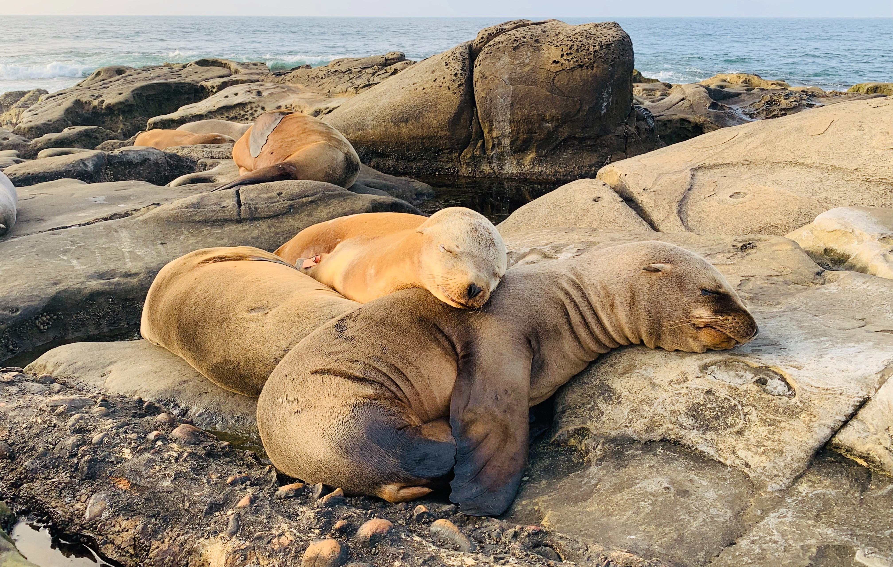

Prepare-se para Seal-abrate!
Mergulhe e descubra o encanto destas maravilhas aquáticas
Explorando o mundo das focas

Agarrem-se às barbatanas, porque estamos prestes a embarcar numa viagem à vida das focas! Estes adoráveis mamíferos aquáticos são verdadeiras estrelas do oceano, e têm histórias muito fixes para contar. Do frio do Ártico às praias ensolaradas, as focas dominam a arte de aproveitar a vida acima e abaixo das ondas. Vamos mergulhar nas águas profundas do conhecimento das focas!
Estilo e movimentos

As focas são conhecidas pelas suas elegantes capacidades de natação, muitas vezes as de nadadores olímpicos de alto nível. As suas barbatanas, semelhantes às de atletas bem treinados, guiam-nas sem esforço pela água com uma com uma graça hipnotizante.
Um aspeto fascinante é o seu isolamento natural: camadas de gordura. Este mecanismo de calor incorporado permite-lhes prosperar em várias temperaturas da água. Imagine estas criaturas a deslizar sob a superfície da água - uma dança perfeita com as correntes, os seus corpos corpos que se movem com fluidez e elegância. É um testemunho da é um testemunho da adaptabilidade da natureza e da beleza inspiradora da vida aquática.
Habitat
Adivinha onde podes encontrar estas criaturas fantásticas? Desde as geladas zonas de mergulho polares às zonas costeiras ensolaradas, as focas sabem escolher as suas almofadas. Adoram relaxar nas costas rochosas, mostrando o seu o seu pelo beijado pelo sol e, ocasionalmente, fazer o cha-cha-slide para a água.
Conheça a tripulação do Seal


Conheça os VIPs (Pinípedes Muito Importantes)! Temos a foca do porto, a foca cinzenta, o elefante-marinho (sim, aquele com o nariz hilariante) e a feroz foca-leopardo. É como um elenco repleto de estrelas do do oceano! Cada uma tem as suas próprias peculiaridades e habilidades, o que as torna os verdadeiros ícones da passadeira vermelha subaquática.
Curiosidades sobre focas

Mergulhe no mundo das focas, essas encantadoras criaturas marinhas com um toque de extraordinário. Desde susterem a respiração como campeões subaquáticos até utilizarem os seus bigodes como GPS subaquático, estas maravilhas marinhas são um verdadeiro espetáculo.
As focas dominam a arte de suster a respiração, deixando qualquer mergulhador profissional verde de inveja. E aqueles bigodes? São como o GPS da natureza, guiando estes exploradores GPS da natureza, guiando estes exploradores subaquáticos nas suas aquáticas
Para um mergulho mais profundo na grandiosidade das focas, visite sealworld.com